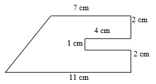
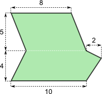
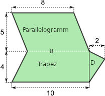

Aufgaben
Aufgabe 1

Berechne den Flächeninhalt.
Eine Möglichkeit, den Flächeninhalt zu berechnen, ist, das Vieleck zu einem Trapez zu ergänzen. Anschließend muss dann nur der Flächeninhalt der Ergänzung, also der Flächeninhalt des roten Rechtecks, abgezogen werden.
Ergänzung

Berechnung der Trapezfläche
Für das Trapez gilt:
- \(a= 11 cm\),
- \(c= 7cm\) und
- \(h = 2cm + 1cm + 2cm = 5cm\)
Den Flächeninhalt eines Trapezes berechnet man bekanntlich folgendermaßen: \[A_{Trapez} = {(a+c) \cdot h \over 2}\]
Setzt man alle bekannten Größen ein, ergibt sich folgender Flächeninhalt: \[ A_{Trapez} = {(11 cm + 7 cm) \cdot 5 cm \over 2} = {18 cm \cdot 5 cm \over 2} = 45 cm²\]
Berechnung der Rechtecksfläche
Das rote Rechteck hat eine
- Länge von \(l = 4cm\) und eine
- Breite von \(b = 1cm\).
Den Flächeninhalt eines Rechteck ermittelt man bekanntlich folgendermaßen:
\[A_{Rechteck} = l \cdot b\]
Setzt man alle bekannten Größen ein, ergibt sich folgender Flächeninhalt:
\[ A_{Rechteck} = 4 cm \cdot 1cm = 4 cm²\]
Berechnung der Vielecksfläche
Für den Flächeninhalt des Vielecks gilt nun: \[A_{Vieleck} = A_{Trapez} - A_{Rechteck}\] Einsetzen der berechneten Flächeninhalte ergibt: \[A_{Vieleck} = 45cm² - 4cm² = 41cm²\]
Antwort
Die Fläche des Vielecks beträgt \(41cm²\).
Aufgabe 2

Berechne den Flächeninhalt.
Eine Möglichkeit, den Flächeninhalt zu berechnen, ist, das Vieleck in ein Parallelogramm, ein Trapez und ein Dreieck zu zerlegen. Der Flächeninhalt des Vielecks ergibt sich dann als die Summe der Teilflächeninhalte.
Zerlegung

Der Flächeninhalt des Parallelogramms:
Für das Parallelogramm gilt:
- \(g= 8\),
- \(h = 5\)
Den Flächeninhalt eines Trapezes berechnet man bekanntlich folgendermaßen: \[A_{Parallelogramm} = g \cdot h\]
Setzt man alle bekannten Größen ein, ergibt sich folgender Flächeninhalt: \[ A_{Parallelogramm} = 8 \cdot 5 = 40\]
Der Flächeninhalt des Trapezes:
Für das Trapez gilt:
- \(a= 10\),
- \(c= 8\) und
- \(h = 4\)
Den Flächeninhalt eines Trapezes berechnet man bekanntlich folgendermaßen: \[A_{Trapez} = {(a+c) \cdot h \over 2}\]
Setzt man alle bekannten Größen ein, ergibt sich folgender Flächeninhalt: \[ A_{Trapez} = {(10 + 8) \cdot 4 \over 2} = {18 \cdot 4 \over 2} = 36\]
Der Flächeninhalt des Dreiecks:
Für das Dreieck gilt:
- \(g= 4\),
- \(h = 2\)
Den Flächeninhalt eines Dreiecks berechnet man bekanntlich folgendermaßen: \[A_{Dreieck} = {1 \over 2} \cdot g \cdot h\]
Setzt man alle bekannten Größen ein, ergibt sich folgender Flächeninhalt: \[ A_{Dreieck} = {1 \over 2} \cdot 4 \cdot 2 = 4\]
Der Flächeninhalt des Vielecks:
Der Flächeninhalt des Vielecks ergibt sich als Summe der Teilflächeninhalte, also: \[A_{Vieleck} = A_{Parallelogramm} + A_{Trapez} + A_{Dreieck} = 40+36+4 = 80\]
Antwort
Das Vieleck ist \(80\) Quadratflächeneinheiten groß.
Aufgabe 3

Stelle eine Formel auf, mit deren Hilfe man den Flächeninhalt des abgebildeten Vielecks berechnen kan. Vereinfache deine Formel soweit wie möglich!
Zerlegung
Ich zerlege das Vieleck in das obere Dreieck mit dem Flächeninhalt \(A_{oberesD}\) und das untere Dreieck mit dem Flächeninhalt \(A_{unteresD}\). Die Summe der beiden Dreieckflächen ergibt den Flächeninhalt des Vielecks.
Der Flächeninhalt des oberen Dreiecks
Für das obere Dreieck gilt:
- \(g= 9r\),
- \(h = r\)
Den Flächeninhalt eines Dreiecks berechnet man bekanntlich folgendermaßen: \[A_{Dreieck} = {1 \over 2} \cdot g \cdot h\]
Setzt man alle bekannten Größen ein, ergibt sich folgender Flächeninhalt: \[ A_{oberesD} = {1 \over 2} \cdot 9r \cdot 2r = 9r²\]
Der Flächeninhalt des unteren Dreiecks
Für das untere Dreieck gilt:
- \(g= 9r\),
- \(h =4r\)
Den Flächeninhalt eines Dreiecks berechnet man bekanntlich folgendermaßen: \[A_{Dreieck} = {1 \over 2} \cdot g \cdot h\]
Setzt man alle bekannten Größen ein, ergibt sich folgender Flächeninhalt: \[ A_{unteresD} = {1 \over 2} \cdot 9r \cdot 4r = 18r²\]
Der Flächeninhalt des Vielecks
Der Flächeninhalt des Vielecks ergibt sich als Summe der Teilflächeninhalte, also: \[A_{Vieleck} = A_{oberesD} + A_{unteresD} = 9r² + 18r² = 27r²\]
Antwort
Das Vieleck ist \(27r²\) Quadratflächeneinheiten groß.
Aufgabe 4

- Berechne den Flächeninhalt des abgebildeten Fünfecks ABCDE.
Natürlich gibt es mehr als einen Weg den Flächeninhalt des Fünfecks ABCDE zu berechnen. Man kann oben links ein Dreieck ergänzen

oder aber das Fünfeck wie folgt in ein Rechteck und ein Trapez zerlegen.

Um einmal mehr die Formel für den Flächeninhalt des Trapezes zu verwenden, entscheide ich mich hier für den zweiten Vorschlag: Ich zerlege also das Fünfeck in das Rechteck FBCD und das Trapez AFDE.
Den Flächeninhalt eines Rechtecks berechnet man folgendermaßen: \[A_R = l \cdot b\]
Für den Flächeninhalt eines Trapezes gilt: \[A_T = {(a+c) \cdot h \over 2}\]
Einsetzen
Setzt man nun alle bekannten Größen ein, erhält man für den Flächeninhalt des Rechtecks: \[A_R = 3cm \cdot 2,4cm = 7,2cm²\] und für den Flächeninhalt des Trapezes: \[A_T = {(2,4cm+1,4cm) \cdot 1cm \over 2} = 1,9cm²\] Der Flächeninhalt des Fünfecks ergibt sich nun als die Summe der beiden eben berechneten Flächeninhalte, also: \[A_F = A_R + A_T = 7,2 cm ² + 1,9 cm² = 9,1cm²\]
Antwort
Das Fünfeck hat einen Flächeninhalt von \(9,1cm²\).
- Expertenaufgabe: Man kann die Ecke E so bewegen, dass der Flächeninhalt des Fünfecks ABCDE unverändert bleibt. Wie ist das möglich?
Die Diagonale AD zerlegt das Fünfeck in das Viereck ABCD und das Dreieck ADE. Bewegt man nun die Ecke E auf der Parallelen p zu (AD) durch E, so bleibt der Flächeninhalt des Dreiecks ADE immer derselbe. Warum gilt das? Mach dir eine Skizze!
Betrachte folgende Skizze:

Warum bleibt der Flächeninhalt des Dreiecks ADE gleich, unabhängig davon, wohin der Punkt E auf der Geraden p verschoben wird?
Erinnere dich: Parallele Geraden haben überall denselben Abstand von einander!
Betrachte folgende Skizze:

Die Diagonale AD zerlegt das Fünfeck in das Viereck ABCD und das Dreieck ADE.
Bewegt man nun die Ecke E auf der durch E verlaufenden und zu (AD) parallelen Geraden p (z.B. nach E’), so bleibt der Flächeninhalt des Dreiecks immer derselbe: Denn parallele Geraden sind bekanntlich immer gleich weit von einander entfernt. Folglich bleibt die Höhe \(h\) auf die Seite AD immer gleich lang, solange der Punkt E auf der Geraden p verschoben wird.
Da aber auch die Grundlinie AD immer gleich bleibt, ändert sich der Flächeninhalt des Dreiecks nicht, wenn der Punkt auf p verschoben wird.
Der Flächeninhalt des Vierecks ABCD ist unabhängig von E und bleibt deshalb sowieso immer derselbe.
Wenn aber die Flächeninhalte der beiden Teilflächen immer gleich bleiben, so kann sich auch der Flächeninhalt des Fünfecks nicht ändern: Er ergibt sich ja als die Summe der beiden Teilflächeninhalte.